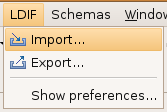
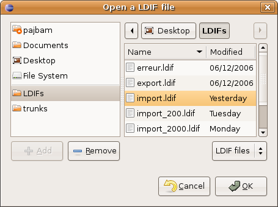
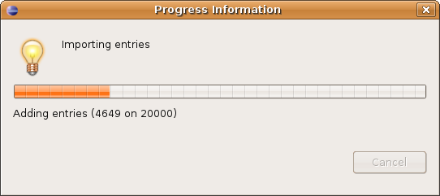
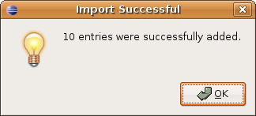
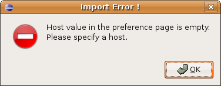
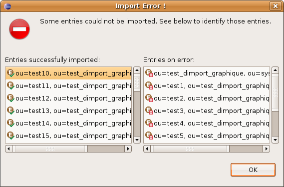

Importing from a LDIF file
In this section, you will learn how to import a LDIF file.
- Select Import... from the LDIF menu.

- Browse the filesystem and select the LDIF file. Then click Open.

- The progression of the import is displayed by the window.

- If all the entries in the file are successfully imported, this message will be displayed.

- If an error occurs (connection problem, error reading the file, etc.) an error window will be displayed.

- If some entries during an import are successfully imported, but some others not. This windows will show the entries that were correctly imported and those that couldn't.
